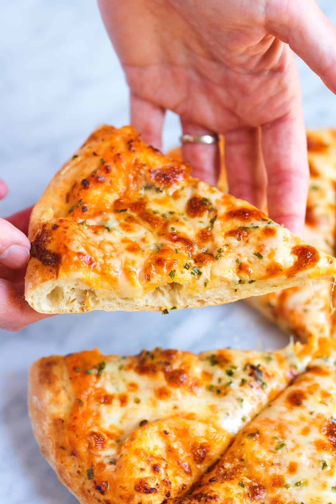

Cheese Pizza Recipe
Home
"

Description:
Are you ready to make the best homemade cheese pizza we have ever made? This recipe has become our family’s go-to homemade pizza. It’s super simple and so good!
Ingredients:
- 1 batch homemade pizza dough or use store-bought dough
- 4 to 6 tablespoons pizza sauce, try homemade pizza sauce
- 1 cup (57g) shredded mozzarella, not fresh mozzarella
- 1/2 cup (28g) shredded parmesan
- 1 tablespoon chopped fresh chives
- 1/4 teaspoon dried oregano
- All-purpose flour, for forming dough disc
- Semolina flour, for dusting pan
Steps:
- At least 30 minutes before you plan to bake your pizza, preheat the oven to 450° Fahrenheit (232°C). If you have one, place a pizza steel or pizza stone into the oven before preheating.
- If your pizza dough is cold, allow it to warm at room temperature for 20 to 30 minutes.
- When ready to bake your pizza, prepare a pizza peel or pizza pan by dusting it with semolina flour.
- In a medium bowl, mix the shredded mozzarella, parmesan, chives, and oregano together.
- Dust a clean work surface with all-purpose flour, and then form your pizza dough into a round, large enough to fit your pizza peel or pan. To stretch the dough, avoid rolling it out, as this can flatten the bubbles that have formed. Instead, use your fingers to make dimples in the dough, starting from the center and working outwards. Carefully stretch and push the dough to fit your pizza pan or peel. Use a light touch to maintain as many air pockets in the dough as possible.
- Transfer the dough round to your pizza peel or pan, and reform it if it shrinks back a bit.
- Spread pizza sauce over the pizza, leaving a thin edge untouched for the crust. Scatter the cheese mixture over the sauce.
- Bake until the crust is set and golden brown and the cheese has melted with golden spots all over, 6 to 15 minutes, depending on oven temperature. Remove from the oven, cut, and serve.